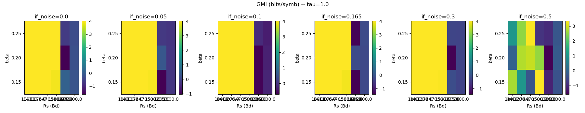
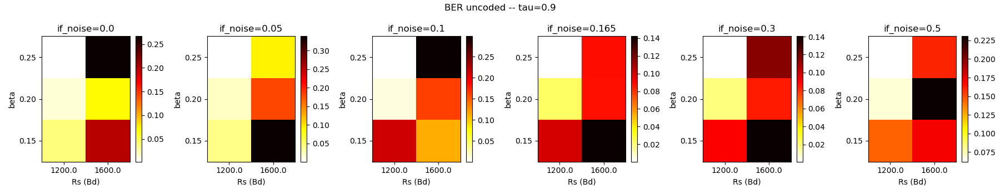
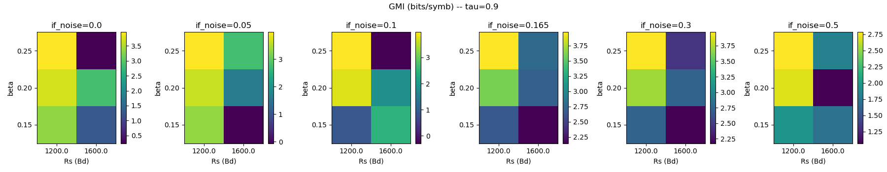

BER uncoded, τ=1.0 (Nyquist orthogonal). Colonnes
= if_noise, axe X = Rs, axe Y = β.

GMI (bits/symb), τ=1.0. Max = 4.
Objectif : evaluer en simulation si une constellation 16-APSK DVB-S2 combinee a un RRC agressif (β petit) et optionnellement a une transmission FTN (Faster Than Nyquist, τ<1) permet de depasser le plafond mesure des modems QAM actuels (~1000 Bd pour 16-QAM avec DFE) sur le canal NBFM radio amateur. Choix de la meilleure configuration pour essai OTA via des criteres physiques (GMI, ouverture d'oeil, marge au seuil LDPC).
Le canal NBFM amateur (voir rapport canal) est caracterise par :
| Parametre canal NBFM | Valeur |
|---|---|
| Bande utile -3 dB | 300 – 2200 Hz |
| Pre/de-emphase | τ = 75 µs |
| LPF post-demod | 2000 Hz (coupure raide) |
| Clip TX audio | 0.55 (limiteur excursion FM) |
| Derive horloge mesuree | -16 ppm |
| SNR cible post-demod | 20 dB |
Les essais 16-QAM / 32-QAM precedents (voir rapport modem SC) plafonnent autour de Rs=1000 Bd. Au-dela, la bande occupee sort du plateau plat NBFM et le BER explose meme avec une DFE 9+5 taps.
Chaine alignee sur l'architecture OTA visee (FSE + DD-PLL + soft demap LLR → LDPC LNMS WiMAX 2304 → CRC32 → QRaptor) :
audio 48 kHz → downmix 1100 Hz → RRC matched (β)
→ sync grossiere (correlation preambule post-MF)
→ decimation entiere d_fse = GCD(SPS, pitch)
→ FSE FFE T/2 (LMS, taps=17 a τ=1, 41 a τ=0.9)
+ DFE T-spaced (auto-desactive pour FTN, error propagation)
→ DD-PLL 2e ordre (discriminateur Im{y·conj(a)}/|a|²)
→ soft demapper max-log LLR
→ [LDPC LNMS externe / non inclus dans le banc]
Regles "N entier" : a 48 kHz, SPS = 48000/Rs entier, et pitch = τ·SPS entier. Le facteur de decimation d_fse divise simultanement SPS et pitch, ce qui donne FSE T/2 classique a τ=1 (9-17 taps) et FSE T/10 oversamplee a τ=0.9 (41 taps). Aucun resampling fractionnaire.
Toutes les briques sont publiques, eprouvees, referencees :
| Bloc | Reference |
|---|---|
| 16-APSK (4,12), γ=2.85 | DVB-S2 ETSI EN 302 307-1 §5.4.3
(rate 3/4), table extraite de gr-dvbs2 (public) |
| RRC β ∈ {0.15, 0.20, 0.25} | Nyquist / Proakis |
| FTN τ<1 | Mazo 1975, Anderson & Rusek 2013 |
| Preambule + pilotes TDM | Meme convention que les benchs precedents (D=32 data + P=2 pilotes QPSK) |
| FSE T/2 LMS | Gitlin-Weinstein, Proakis ch.10 |
| DFE LMS | Proakis |
| Decision-Directed PLL (APSK) | Meyr/Moeneclaey/Fechtel "Digital Communication Receivers" ch.8 |
| Soft demapper max-log LLR | Viterbi 1998 |
| GMI (BICM) | Alvarado et al., IEEE TIT 2008 |
| LDPC WiMAX N=2304 reference | IEEE 802.16e-2005, rates 1/2, 2/3, 3/4 |
Grille : 10 points (Rs, τ) × 3 β × 6 if_noise = 180 combinaisons, N=1000 symboles par point.
| Rs (Bd) | SPS | τ options | BW occupee (Hz) |
|---|---|---|---|
| 1000 | 48 | 1.0 | 1200 (β=0.2) |
| 1200 | 40 | 1.0, 0.900 | 1440 / 1600 |
| 1411.76 | 34 | 1.0, 0.941 | 1694 / 1800 |
| 1500 | 32 | 1.0, 0.938 | 1800 / 1920 |
| 1600 | 30 | 1.0, 0.900 | 1920 / 2133 |
| 2000 | 24 | 1.0 | 2400 (hors bande NBFM) |



Top configurations par rate LDPC WiMAX 2304 (seuil GMI = 4·r + 0.5 bits/symb de marge) :
| Rs (Bd) | β | τ | if_noise max OK | Debit utile | GMI | BER uncoded | Oeil |
|---|---|---|---|---|---|---|---|
| 1500.00 | 0.15 | 1.000 | 0.500 | 3000 bit/s | 3.33 | 0.028 | 0.22 |
| 1500.00 | 0.25 | 1.000 | 0.300 | 3000 bit/s | 4.00 | 0.000 | 0.50 |
| 1411.76 | 0.25 | 1.000 | 0.500 | 2823 bit/s | 3.30 | 0.025 | 0.21 |
| Rs (Bd) | β | τ | if_noise max OK | Debit utile | GMI | BER uncoded | Oeil |
|---|---|---|---|---|---|---|---|
| 1500.00 | 0.20 | 1.000 | 0.300 | 4000 bit/s | 4.00 | 0.000 | 0.56 |
| 1500.00 | 0.25 | 1.000 | 0.300 | 4000 bit/s | 4.00 | 0.000 | 0.50 |
| 1411.76 | 0.20 | 1.000 | 0.300 | 3764 bit/s | 4.00 | 0.000 | 0.79 |
| 1500.00 | 0.25 | 0.938 | 0.300 | 3750 bit/s | 3.98 | 0.001 | 0.47 |
| Rs (Bd) | β | τ | if_noise max OK | Debit utile | GMI | BER uncoded | Oeil |
|---|---|---|---|---|---|---|---|
| 1500.00 | 0.20 | 1.000 | 0.300 | 4500 bit/s | 4.00 | 0.000 | 0.56 |
| 1500.00 | 0.25 | 1.000 | 0.300 | 4500 bit/s | 4.00 | 0.000 | 0.50 |
| 1411.76 | 0.20 | 1.000 | 0.300 | 4235 bit/s | 4.00 | 0.000 | 0.79 |
if_noise_voltage
(0 a 0.5), pas en dB calibre. Une cartographie exacte SNR ↔ if_noise
reste a faire si on veut croiser avec les seuils LDPC AWGN publies.results/apsk16_ftn/llr_dumps/*.npy) pour branchement
ulterieur sur un decodeur LNMS WiMAX 2304 externe.pilot_metrics_from_fse) mais pas compense activement. Sur
canal NBFM le drift 16 ppm reste sous T/4 meme sur des paquets de
1000 symboles, donc la FSE T/2 l'absorbe. A activer si l'OTA revele
des paquets plus longs.Source : study/modem_apsk16_ftn_bench.py. Tests unitaires
complets :
/c/Users/tous/radioconda/python.exe study/modem_apsk16_ftn_bench.py --test
Sweep rapide (18 points, <2 min) :
/c/Users/tous/radioconda/python.exe study/modem_apsk16_ftn_bench.py --sweep --quick
Sweep complet (180 points, ~15-20 min) :
/c/Users/tous/radioconda/python.exe study/modem_apsk16_ftn_bench.py --sweep --n-symbols 1000
Sorties : results/apsk16_ftn/sweep.csv,
heatmaps/*.png, recommendation.md,
llr_dumps/*.npy.